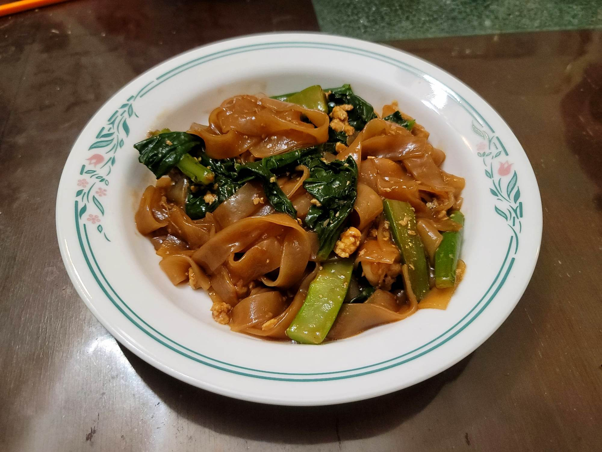

Pad See Ew

Ingredients:
Sauce:
- 4 tsp Dark soy sauce
- 3 tbsp Oyster sauce
- 2 tbsp Light soy sauce
- 4 tsp White vinegar
- 4 tsp Sugar
Pad See Ew
- 10-16 oz Chicken thighs, boneless, skinless, cut into strips
- 1 lb Dried wide rice stick noodles
- 2 tbsp Canola oil
- 4 cloves Garlic, minced
- 2 Eggs
- 8~ Chinese broccoli, stems and leaves separated, stems halved and cut into 3" pieces
- 4 tbsp Canola oil
Instructions:
- Mix the sauce ingredients together and reserve.
- Prepare the noodles according to package instructions. Time it so that it would finish cooking just before cooking.
- Heat 2 tbsp oil in a large wok over high heat. Add the garlic and stir-fry just until fragrant, only about 15 seconds. Then immediately add in the chicken and stir-fry until just mostly white.
- Add in the broccoli stems and stir-fry until the chicken looks cooked. Then add the broccoli leaves and cook until wilted.
- Push everything in the wok to the side, off the direct heat. Add the eggs in over the heat and scramble. Once cooked, toss everything together briefly and then remove everything from the wok and reserve. Wipe the wok clean.
- Heat the 4 tbsp Canola oil in the wok over very high heat. Once hot, add in the noodles and sauce. Toss frequently enough evenly distribute the sauce and let the noodles caramelise, for about 1 1/2 - 2 minutes.
- Add back in the reserved chicken and vegetables and toss until everything is evenly mixed and heated thoroughly.
- Remove from the heat and serve immediately.